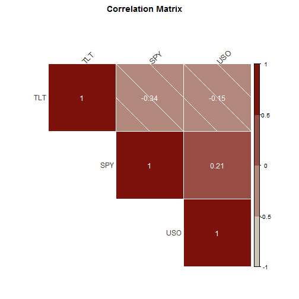

Securities Matrix Correlation allows to generate a matrix containing the correlations among the different entered securities.
Each of them will be placed in the intersection cell between the security in the row and the security in the column.
Ricardo Naya
Data Scientist
Securities Matrix Correlation allows to generate a matrix containing the correlations among the different entered securities.
Each of them will be placed in the intersection cell between the security in the row and the security in the column.
When building a stock portfolio, is important to know how correlated are the different stocks or funds.
A diversified portfolio (low correlation among its stocks) will have much less risk for the same amount of expected return than a non-diversified portfolio (high correlation among its stocks)
The only information required to the user for the calculation will be:
Once the application has this information, it will request the returns information for each security through the package "stockPortfolio". These returns will be calculated weekly.
Once we have these returns, the app will calculate the covariance matrix, measuring the variance of the returns of one security against the other each week.
Finally, this covariance will be normalized in the correlation matrix.
The application can be run from the url: https://alfil.shinyapps.io/correlation_matrix/
For example, if we calculate it for the securities TLT, SPY and USO. We would obtain:
